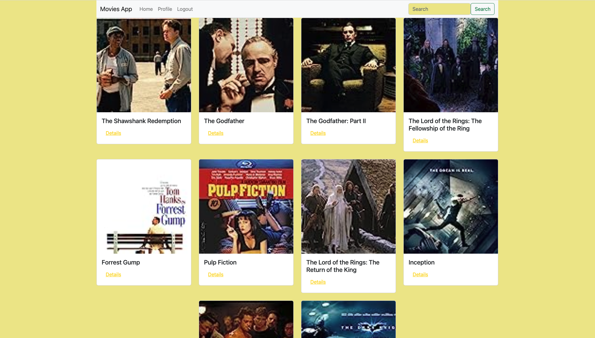
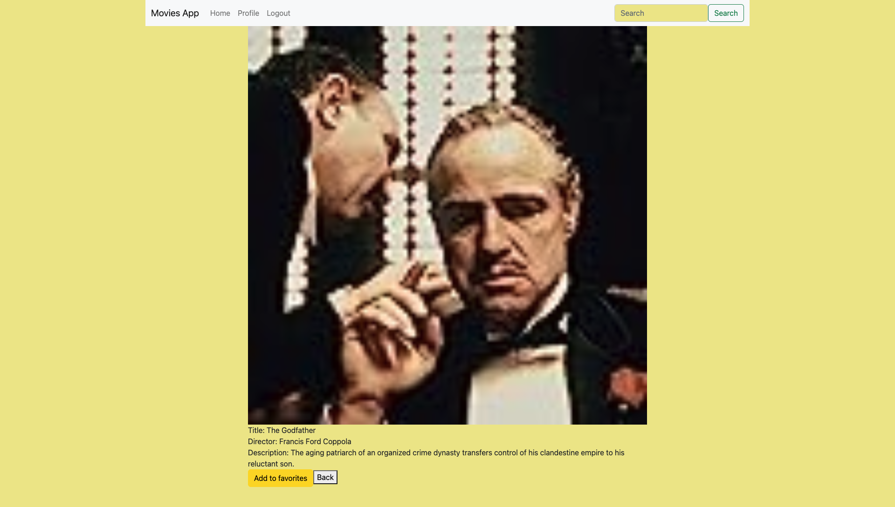
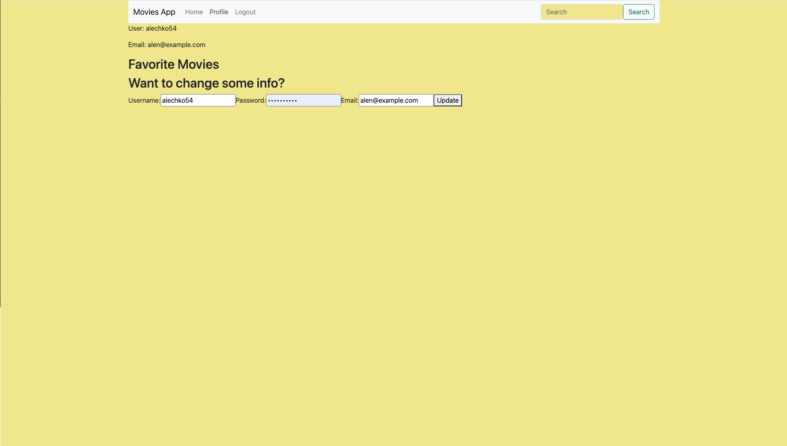

myFlix is a user-friendly website that lets people browse movies, get details on directors, and explore various genres. It features straightforward user registration, profile customization, and an option to mark favorite movies.
Project Origin
I developed myFlix as a part of my web development course at CareerFoundry. It serves as a testament to my understanding of both front-end and back-end development using JavaScript.
Project Goals
The goal was to build an interactive website where users can easily navigate the front-end while ensuring a stable and efficient back-end system.

A glimpse of the movies on myFlix
Development Techniques
Back-end Development
I employed Node.js and Express.js for server-side operations. For data storage, MongoDB was my go-to because of its versatility. Standard practices were followed with data being exchanged in JSON format.
Using Postman, I ensured the back-end's functionality and also implemented secure user sign-in processes.
Front-end Development
For the user interface, React was my tool of choice, guaranteeing a responsive layout across devices. The site showcases movie lists, detailed movie descriptions, user sign-in, and profile settings.

Detailed Movie View

User Profile Overview
Challenges & Learnings
While creating myFlix, I encountered various challenges, especially understanding database interactions and nuances of React. However, with perseverance and collaborative learning, I enhanced my skills significantly.
Project Timeline
The front-end development took a bit more time than anticipated, especially grasping new techniques and ensuring seamless integration with the back-end.